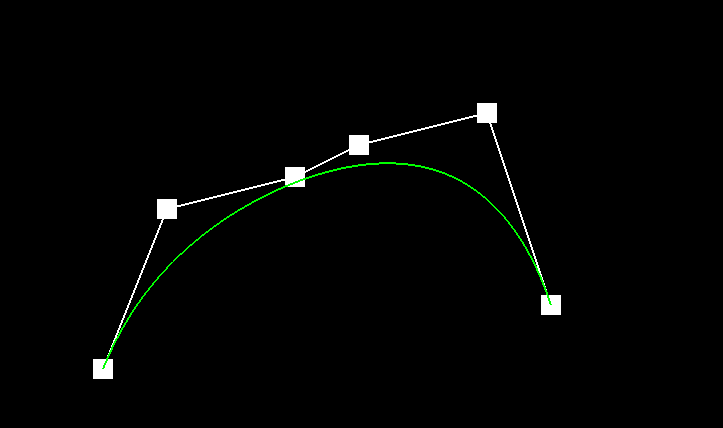
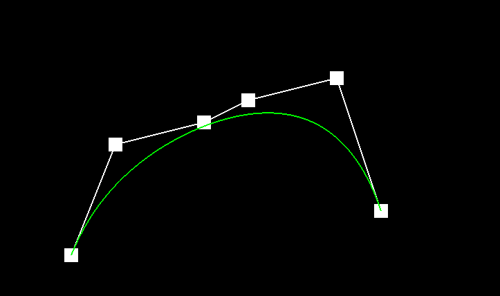

2: 


3:
1:de Casteljau's algorithm will each time, linear interpolate two nearby points with parameter t until we get n-1 new points, and repeat the process until we have only 1 point left.
In my implementation, I just iterate over all the nearby points, use (1-t)*p1 + t * p2 to get the new point. Repeat the process until I get n - 1 points.
2:

3: